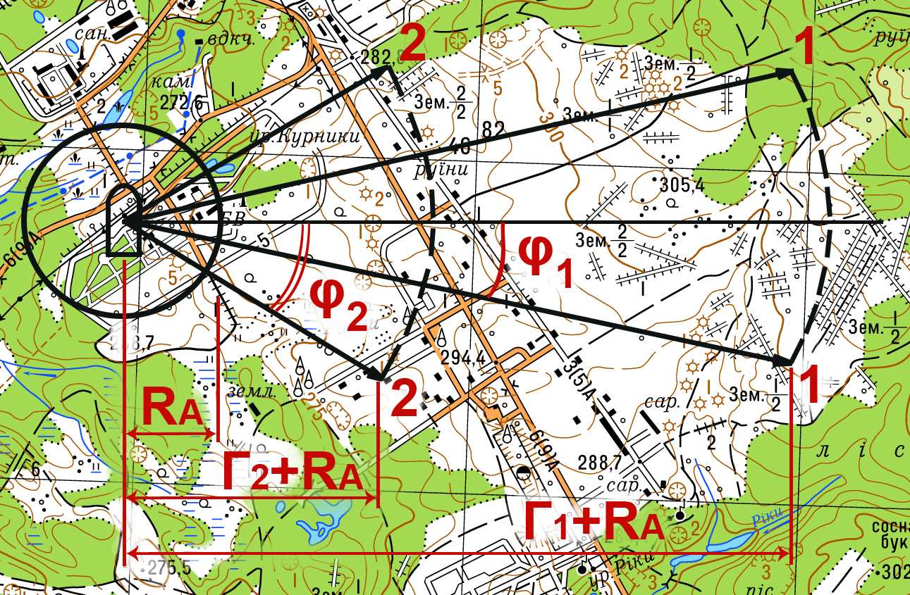

Исходные данные, необходимые для прогнозирования масштабов химического заражения (загрязнения) при разрушении (аварии) на объектах химической промышленности:
- наименование сильнодействующего ядовитого вещества;
- объём разрущеной ёмкости с СДЯВ;
- время и дата разрушения (аварии);
- скорость ветра в приземном слое атмосферы в районе аварии на высоте 2 м;
- температура воздуха в приземном слое атмосферы в районе аварии на высоте 2 м;
- степень вертикальной устойчивости воздуха в районе аварии;
- характеристика рельефа местности в районе аварии;
- наличие лесов и их виды в районе аварии;
- необходимая точность (вероятность) расчета.
Для расчетов масштабов заражения (загрязнения) необходимо определить следующие параметры:
- радиус района аварии;
- глубину распространения первичного облака СДЯВ;
- глубину распространения вторичного облака СДЯВ;
- площадь распространения первичного облака СДЯВ;
- площадь распространения вторичного облака СДЯВ.
Рис. Прогнозируемый район химического заражения
1 - внешние границы распространения первичного облака СДЯВ;
2 - внешние границы распространения вторичного облака СДЯВ;
RA - радиус аварии;
Г1 - глубина распространения первичного облака;
Г2 - глубина распространения вторичного облака;
φ1 - угол распространения первичного облака относительно оси направления ветра;
φ1 - угол распространения вторичного облака относительно оси направления ветра.
Для низкокипящих СДЯВ при разрушении емкости объёмом до 100т RA = 0.5 км, в остальных случаях RA = 1 км.
Для высококипящих СДЯВ при разрушении емкости объёмом до 100т RA = 0.2 - 0.3 км, в остальных случаях RA = 0.5 км.
Г1 = Г1Т * Кt1 * Кк * Км ;
Г1Т - глубина распространения первичного облака СДЯВ (табличное значение) (табл. 1);
Кt1 - коэфициент влияния температуры воздуха (табл. 2);
Кк - коэфициент пропорциональности (табл. 3);
Км - коэфициент влияния местности (табл. 6 и 7).
Г2 = Г2Т * Кt2 * Кк * Км ;
Г2Т - глубина распространения первичного облака СДЯВ (табличное значение) (табл. 4);
Кt2 - коэфициент влияния температуры воздуха (табл. 5);
Кк - коэфициент пропорциональности (табл. 3);
Км - коэфициент влияния местности (табл. 6 и 7).
S1 = ( Г1 + RA )2 * φ1 / 60 ;
S1 - площадь распространения первичного облака СДЯВ;
Г1 - глубина распространения первичного облака СДЯВ;
RA - радиус аварии;
φ1 - угол распространения первичного облака относительно оси направления ветра (табл. 8);
S2 = ( Г2 + RA )2 * φ2 / 60 ;
S2 - площадь распространения вторичного облака СДЯВ;
Г2 - глубина распространения вторичного облака СДЯВ;
RA - радиус аварии;
φ1 - угол распространения вторичного облака относительно оси направления ветра (табл. 8);
Таблица 1.
Наименование СДЯВ | Ёмкость хранения, т | Конвекция | Изотермия | Инверсия |
|||||||
Cкорость ветра на высоте 2 м, м/с |
|||||||||||
1 | 2 | 3 | 1 | 2 | 4 | 6 | 1 | 2 | 3 |
||
Аммиак | 30 | 0.5 | < 0.5 | < 0.5 | 1.8 | 1.2 | 0.8 | 0.6 | 3.6 | 2.4 | 1.5 |
50 | 0.7 | < 0.5 | < 0.5 | 2.4 | 1.6 | 1.1 | 0.8 | 5.0 | 3.2 | 2.1 |
|
100 | 0.9 | 0.7 | 0.6 | 3.5 | 2.4 | 1.6 | 1.3 | 6.7 | 4.4 | 3.4 |
|
150 | 1.1 | 0.8 | 0.7 | 4.4 | 3.0 | 2.0 | 1.6 | 8.6 | 5.6 | 4.3 |
|
300 | 1.6 | 1.1 | 0.9 | 6.6 | 4.4 | 3.0 | 2.4 | 13.3 | 8.6 | 6.7 |
|
500 | 2.0 | 1.4 | 1.2 | 8.8 | 6.0 | 4.0 | 3.2 | 18.3 | 11.9 | 9.2 |
|
1000 | 2.8 | 2.0 | 1.6 | 13/1 | 8.8 | 6.0 | 4.7 | 28.0 | 18.3 | 14.2 |
|
2000 | 3.9 | 2.8 | 2.3 | 20.0 | 13.5 | 9.1 | 7.2 | 44.8 | 29.1 | 22.6 |
|
100003 | 3.1 | 2.3 | 1.9 | 15.4 | 10.4 | 7.0 | 5.5 | 33.7 | 22.0 | 17.0 |
|
300003 | 5.3 | 3.8 | 3.1 | 29.0 | 19.5 | 13.1 | 10.4 | 67.0 | 43.6 | 34.0 |
|
Окись углерода | 5 | < 0.5 | < 0.5 | < 0.5 | 0.8 | 0.5 | < 0.5 | < 0.5 | 1.5 | 1.0 | 0.7 |
10 | < 0.5 | < 0.5 | < 0.5 | 1.2 | 0.8 | 0.6 | 0.5 | 2.3 | 1.5 | 1.0 |
|
30 | 0.5 | < 0.5 | < 0.5 | 2.2 | 1.5 | 0.9 | 0.8 | 4.6 | 3.0 | 1.9 |
|
50 | 0.8 | 0.6 | 0.5 | 3.0 | 2.0 | 1.4 | 1.1 | 6.6 | 4.3 | 2.7 |
|
100 | 1.1 | 0.8 | 0.7 | 4.8 | 3.2 | 2.2 | 1.6 | 10.1 | 6.6 | 4.3 |
|
Фосген | 5 | 0.9 | < 0.5 | < 0.5 | 1.7 | 1.2 | 0.8 | 0.6 | 2.7 | 1.7 | 1.3 |
10 | 1.2 | 0.5 | < 0.5 | 2.5 | 1.7 | 1.2 | 0.9 | 4.1 | 2.7 | 2.1 |
|
30 | 2.1 | 0.8 | 0.7 | 4.8 | 3.2 | 2.2 | 1.7 | 8.1 | 5.2 | 4.1 |
|
50 | 2.6 | 1.0 | 0.8 | 6.4 | 4.3 | 2.9 | 2.3 | 11.1 | 7.2 | 5.6 |
|
100 | 3.6 | 2.6 | 2.2 | 10.0 | 6.5 | 4.4 | 3.5 | 16.7 | 11.0 | 8.4 |
|
150 | 4.4 | 3.2 | 2.6 | 12.5 | 8.1 | 5.5 | 4.4 | 21.0 | 13.8 | 10.5 |
|
250 | 5.0 | 3.6 | 3.0 | 18.5 | 12.0 | 8.1 | 6.5 | 32.0 | 20.5 | 15.5 |
|
Хлор | 1 | < 0.5 | < 0.5 | < 0.5 | 0.6 | < 0.5 | < 0.5 | < 0.5 | 2.1 | 1.4 | 0.9 |
10 | 0.9 | 0.6 | 0.5 | 4.0 | 2.7 | 1.8 | 1.3 | 8.7 | 5.7 | 3.7 |
|
30 | 1.4 | 1.0 | 0.7 | 7.4 | 5.0 | 3.4 | 2.7 | 17.2 | 11.2 | 7.3 |
|
50 | 1.8 | 1.3 | 0.9 | 10.1 | 6.8 | 4.6 | 3.6 | 24.0 | 15.4 | 10.0 |
|
100 | 2.9 | 2.0 | 1.7 | 14.1 | 9.5 | 6.4 | 5.1 | 30.0 | 20.0 | 15.4 |
|
150 | 3.5 | 2.6 | 2.1 | 17.8 | 12.0 | 8.1 | 6.1 | 39.0 | 25.0 | 20.0 |
|
300 | 5.0 | 3.5 | 2.9 | 26.0 | 17.8 | 12.0 | 9.5 | 60.0 | 39.0 | 30.0 |
|
7503 | 2.6 | 1.9 | 1.5 | 12.6 | 8.6 | 5.8 | 4.6 | 27.0 | 18.0 | 14.0 |
|
10003 | 3.4 | 2.5 | 2.0 | 16.9 | 11.4 | 7.7 | 6.1 | 37.0 | 24.0 | 18.7 |
|
20003 | 4.8 | 3.5 | 2.9 | 26.0 | 17.0 | 12.0 | 9.3 | 59.0 | 38.0 | 30 |
|
Гидразин4, сероводород | Любая | < 0.5 | < 0.5 | < 0.5 |
|||||||
Примечание: | 1. Глубина расчитана на условия, согласно которым инверсия сохраняется на протяжении всего времени распространения СДЯВ. 2. При глубинах меньше 0.5 км принимать их равными 0.5 км. 3. Изотермический способ хранения. 4. Опасность поражения личного состава сохраняется, как правило, в районе аварии. |
Таблица 2.
Наименование СДЯВ | Температура воздуха, oC |
||||||||
-40 | -30 | -20 | -10 | 0 | 10 | 20 | 30 | 40 |
|
Аммиак и хлор1 | 0 | 0.3 | 0.5 | 0.7 | 0.8 | 0.9 | 1.0 | 1.1 | 1.2 |
Аммиак и хлор2 | 0 | 0.1 | 0.2 | 0.4 | 0.6 | 0.8 | 1.0 | 1.2 | 1.3 |
Оксид водорода | 1.0 | 1.0 | 1.0 | 1.0 | 1.0 | 1.0 | 1.0 | 1.0 | 1.0 |
Фосген | 0 | 0 | 0 | 0 | 0 | 0.4 | 1.0 | 1.5 | 1.8 |
Гидразин и сероводород3 | 0 | 0 | 0 | 0 | 0 | 0 | 0 | 0 | 0 |
Примечание: | 1. При хранении в сжатом, сжиженом состоянии (под давлением). 2. При хранении в жидком (охлажденном) состоянии (изотермический способ хранения). 3. Первичное облако не образовывается. Опасность поражения личного состава сохраняется в районе аварии. |
Таблица 3.
Вертикальная устойчивость воздуха | Величина отношения QЗ / QT |
||||||||
0.2 | 0.4 | 0.6 | 0.8 | 1.0 | 2 | 4 | 6 | 8 |
|
Конвекция | 0.5 | 0.6 | 0.8 | 0.9 | 1.0 | 1.4 | 1.9 | 2.4 | 2.7 |
Изотермия | 0.4 | 0.6 | 0.8 | 0.9 | 1.0 | 1.5 | 2.2 | 2.8 | 3.3 |
Инверсия | 0.3 | 0.5 | 0.7 | 0.9 | 1.0 | 1.6 | 2.6 | 3.4 | 4.0 |
Примечание: | QЗ - заданое значение количества СДЯВ в резервуаре (общее количество СДЯВ). QT - табличное значение количества СДЯВ, для которого поданы данные про глубины распространения. |
Таблица 4.
Наименование СДЯВ | Ёмкость хранения (общее количество), т | Вертикальная устойчивость воздуха |
||
Конвекция | Изотермия | Инверсия |
||
Аммиак | 302 | < 0.5 | 0.5 | 0.7 |
502 | < 0.5 | 0.6 | 0.9 |
|
100 - 150 | < 0.5 | < 0.5 | 0.5 |
|
300 | < 0.5 | 0.5 | 0.8 |
|
500 | < 0.5 | 0.6 | 0.9 |
|
1000 | < 0.5 | 0.8 | 1.4 |
|
2000 | < 0.5 | 1.0 | 1.6 |
|
10000 | 0.7 | 2.7 | 3.5 |
|
30000 | 0.8 | 4.0 | 5.4 |
|
Гидразин | 1 - 400 | < 0.5 | < 0.5 | < 0.5 |
Фосген | 1 | < 0.5 | 0.5 | 0.6 |
5 | < 0.5 | 1.0 | 1.4 |
|
10 | < 0.5 | 1.4 | 2.1 |
|
30 | 0.6 | 2.5 | 3.9 |
|
50 | 0.9 | 3.3 | 5.2 |
|
100 | 0.6 | 2.1 | 3.8 |
|
150 | 0.8 | 2.6 | 4.8 |
|
250 | 1.0 | 3.8 | 7.1 |
|
Хлор | 12 | < 0.5 | < 0.5 | < 0.5 |
102 | < 0.5 | 0.8 | 1.1 |
|
302 | < 0.5 | 1.4 | 2.7 |
|
502 | 0.5 | 1.8 | 3.6 |
|
100 | < 0.5 | 1.2 | 2.0 |
|
150 | < 0.5 | 1.5 | 2.6 |
|
300 | 0.6 | 2.2 | 3.8 |
|
750 | 1.0 | 3.4 | 6.1 |
|
1000 | 1.2 | 4.6 | 8.7 |
|
2000 | 1.5 | 6.7 | 13.0 |
|
Примечание: | 1. Глубины расчитаны для средних условий, в случае глубокой инверсии глубины в 1,5 - 2 раза большие. 2. При выбросе (разливе) СДЯВ на поверхность земли (при отсутствии поддона). |
Таблица 5.
Наименование СДЯВ | Вертикальная устойчивость воздуха |
||||||||
-40 | -30 | -20 | -10 | 0 | 10 | 20 | 30 | 40 |
|
Аммиак, хлор1 | 0.5 | 0.6 | 0.6 | 0.7 | 0.8 | 0.9 | 1.0 | 1.1 | 1.2 |
Аммиак, хлор2 | 0.4 | 0.5 | 0.6 | 0.7 | 0.8 | 0.9 | 1.0 | 1.2 | 1.3 |
Фосген | 0.3 | 0.4 | 0.5 | 0.6 | 0.7 | 0.9 | 1.0 | 1.2 | 1.3 |
Гидразин, сероводород и окись углерода3 | 0 | 0 | 0 | 0 | 0 | 0 | 0 | 0 | 0 |
Примечание: | 1. При хранении в сжатом, сжиженом состоянии (под давлением). 2. При хранении в жидком (охлажденном) состоянии (изотермический способ хранения). 3. Вторичное облако не образуется. |
Таблица 6.
Вид растительности | Тип лесов | Вид рельефа |
|||||
Равнинный плоский | Равнинный волнистый | Равнинный холмистый | Овражно-балочный | Холмистый | Предгорье |
||
Тайговая | Хвойные Лиственные | 1.1 0.9 / 0.6 | 1.3 1 / 0.7 | 1.4 1.1 / 0.9 | 1.5 1.3 / 1 | 1.6 1.5 / 1.3 | 2 1.8 / 1.5 |
Лесистая (лесисто-озерная) | Хвойные Лиственные | 0.9 0.6 / 0.4 | 1.1 0.8 / 0.6 | 1.2 0.9 / 0.7 | 1.3 1 / 0.8 | 1.4 1 / 0.9 | 1.6 1.2 / 1.1 |
Лесисто-степная (лесисто-болотистая) | Хвойные Лиственные | 0.6 / 0.5 0.4 / 0.2 | 0.8 / 0.7 0.6 / 0.3 | 1 / 0.8 0.8 / 0.5 | 1.1 / 0.9 0.9 / 0.6 | 1.2 / 1 0.9 / 0.7 | 1.5 / 1.3 1.1 / 1 |
Степовая (озерно-болотистая) | - | 0.3 / 0.1 | 0.4 / 0.2 | 0.7 / 0.4 | 0.8 / 0.5 | 0.8 / 0.6 | 1 / 0.9 |
Полупустынная (тундра) | - | 0.1 / 0.05 | 0.2 / 0.1 | 0.4 / 0.3 | 0.5 / 0.5 | 0.6 / 0.6 | 0.8 / 0.8 |
Пустынная | - | 0.01 | 0.1 | 0.3 | 0.5 | 0.6 | 0.8 |
Примечание: | В числителе приведены значения показателя Кр при наличии листвы, в знаменателе - при отсутствии листвы и наличии снежного покрова. |
Таблица 7.
Комплексный показатель Кр | Вертикальная устойчивость приземного слоя атмосферы |
||
Конвекция | Изотермия | Инверсия |
|
0.05 | 1.0 | 1.0 | 1.0 |
0.1 | 0.8 | 0.8 | 0.9 |
0.2 | 0.5 | 0.6 | 0.6 |
0.4 | 0.3 | 0.4 | 0.5 |
0.6 | 0.3 | 0.3 | 0.4 |
0.8 | 0.2 | 0.3 | 0.4 |
1.0 | 0.1 | 0.2 | 0.3 |
1.2 | 0.1 | 0.1 | 0.1 |
1.4 | 0.05 | 0.05 | 0.05 |
1.6 | 0.05 | 0.05 | 0.05 |
1.8 | 0.03 | 0.02 | 0.03 |
2.0 | 0.02 | 0.01 | 0.03 |
Таблица 8.
Параметр | Вертикальная устойчивость воздуха | Значение необходимой вероятности |
||
0.5 | 0.75 | 0.9 |
||
Прогнозирование зоны распространения | ||||
1) первичного облака СДЯВ (φ1) | Инверсия Изотермия Конвекция | 9 12 15 | 15 20 25 | 20 25 30 |
2) вторичного облака СДЯВ (φ2) | ||||
- при времени испарения СДЯВ от 2 до 6 часов | Инверсия Изотермия Конвекция | 12 15 20 | 20 25 35 | 30 40 50 |
- при времени испарения СДЯВ от 6 до 12 часов | Изотермия | 22 | 37 | 52 |
- при времени испарения СДЯВ от 12 до 24 часов | Изотермия | 30 | 50 | 70 |
Примечание: | 1. При прогнозировании зоны распространения вторичного облака, в случае когда время испарения СДЯВ меньше 2 часов, значение φ2 такие же как и для φ1. 2. Данные таблицы расчитаны для средних условий и не учитывают местные ветра, направление и изменчивость которых необходимо учитывать индивидуально. |